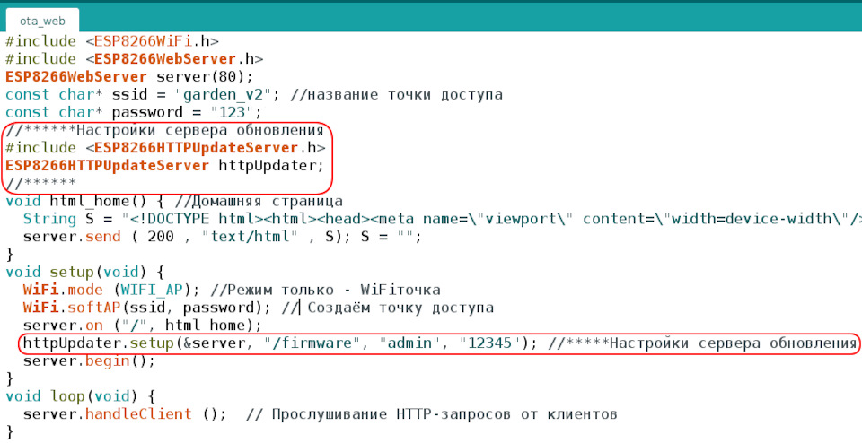
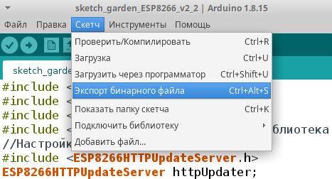
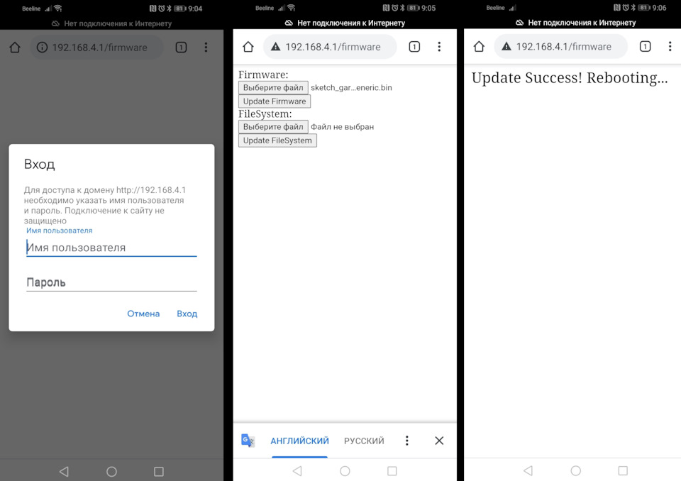
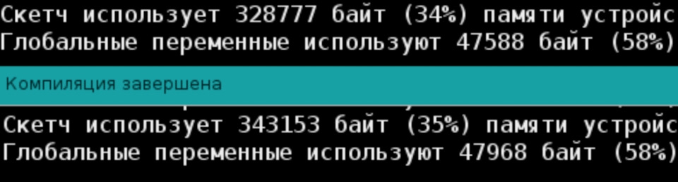
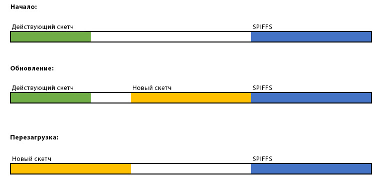

через WEB, OTA
5 августа 2021
Dremch Был 2 часа назад
Артем
Я езжу на Chery iCar 03 Первый на драйве и Nissan Qashqai 4x4 (до этого — Evolute i-Joy, Geely Emgrand X7 и FIAT Doblo)
Солнечногорск, Россия
Подписаться
Когда все собрано и где то установлено, постоянно дергать модуль ESP, для прошивки, не удобно. В таком варианте лучше прошивать по воздуху (OTA).
Варианты прошивки методом OTA (over the air):
— Библиотека для ESP8266 ArduinoOTA. Поднимается сервер обновлений на ESP, устанавливается дополнительный софт в ПК. И через Arduino IDE прошивается как будто подключено по USB, НО по воздуху.
— Библиотека для ESP8266 ESP8266HTTPUpdateServer. Не требует ни каких дополнительных настроек ПК, работает через WEB интерфейс.
Заинтересовал последний вариант, прост во всех отношениях.
Прошивка по воздуху через WEB:
Сначала в Arduino IDE по USB прошиваем измененный скетч в ESP8266.Выделенные строки остаются в проекте на постоянку.
Понятно, что:
"/firmware" — страница на которую надо зайти для прошивки
"admin" — имя пользователя, для разрешения на прошивку
"12345" — пароль, для разрешения на прошивку
Потом нужно собрать файл проекта ***.bin, который будем прошивать по воздуху.Файл сохраняется в папке проекта.
Цепляемся по WiFi и заходим на страницу "/firmware"Вводим пароль, указываем на файл прошивки и дожидаемся сообщения об окончании.
После удачной прошивки ESP8266 автоматически перегрузится.
Что радует, на борту ESP8266-01 всего 1 мБ, а все работает. Правда и код "Автополив v2" занимает мало места.Сверху без обновления по воздуху.
Для понимания ограничений, можно рассмотреть процесс прошивки:Картинка из wikipedia
То есть, если не превышать размер свободного пространства, то проблем быть не должно.
Зато теперь можно впаивать модуль ESP8266 и спокойно прошивать по воздуху.
5 августа 2021
12
Поделиться:
РанееУмный дом Arduino SIM800L v1.2ДалееЗамена Arduino Ide на PlatformIO